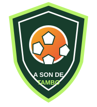

FICHA OFICIAL
Cargando equipo…
Información y estadísticas del equipo
PLANTILLA
Listado de jugadores
Partidos, goles, asistencias y tarjetas registradas.
| Jugador | N.º | Posición | PJ | Goles | Asist. | TA | TR |
|---|---|---|---|---|---|---|---|
| Cargando plantilla… | |||||||
TEMPORADA
Partidos del equipo
Histórico, encuentros programados y pendientes por programar.